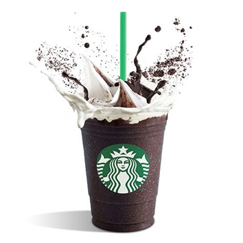
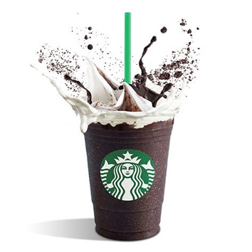

Four Drink's, A Million
Reasons
"Just love yourself and you're set." - Lady Gaga
Lady Gaga and Starbucks share a mission: to build a kinder, braver world. Through the Born This Way Foundation, Lady Gaga has inspired her fans to embrance kindness in thei communities-online and in the world. With your help, we can empower young people to spread more kindness.
Learn More

 
